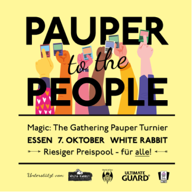
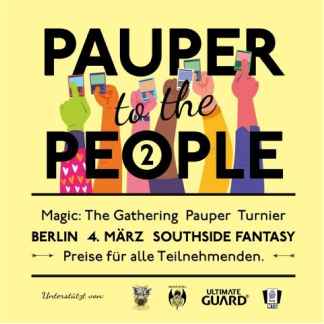
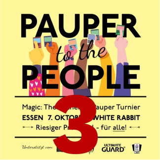
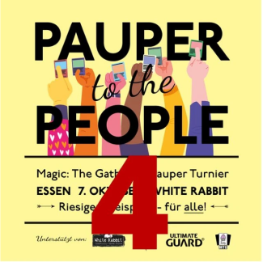
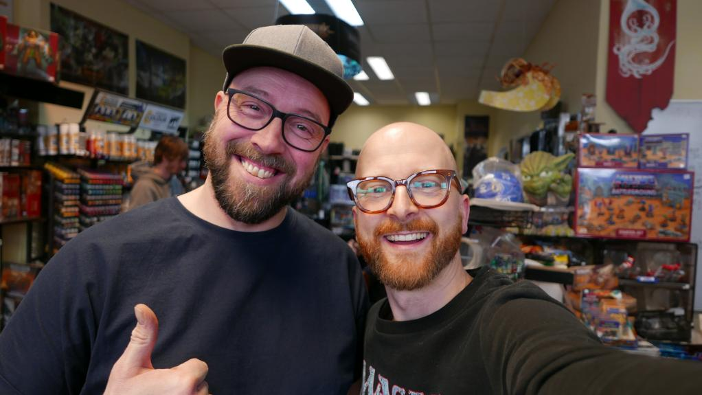
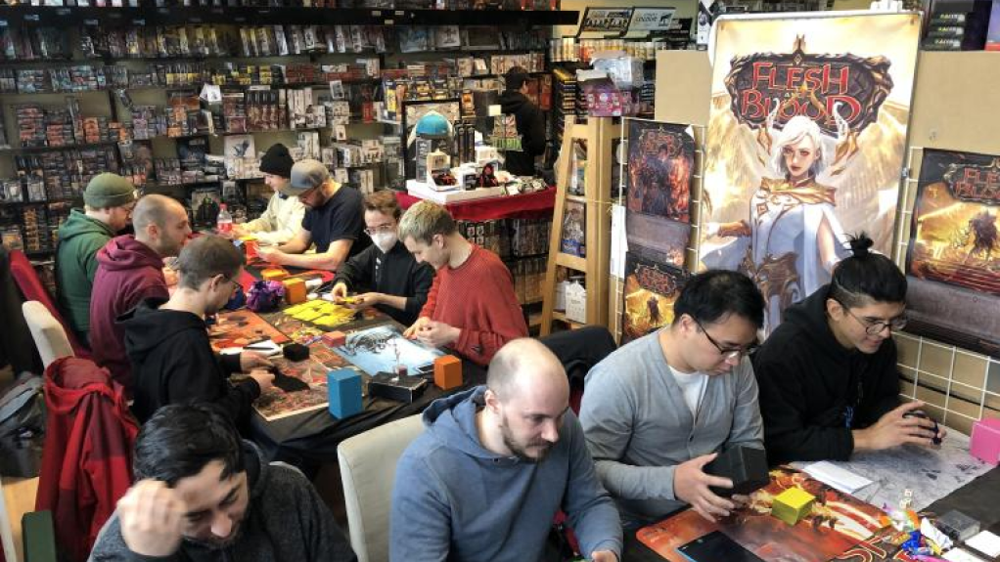
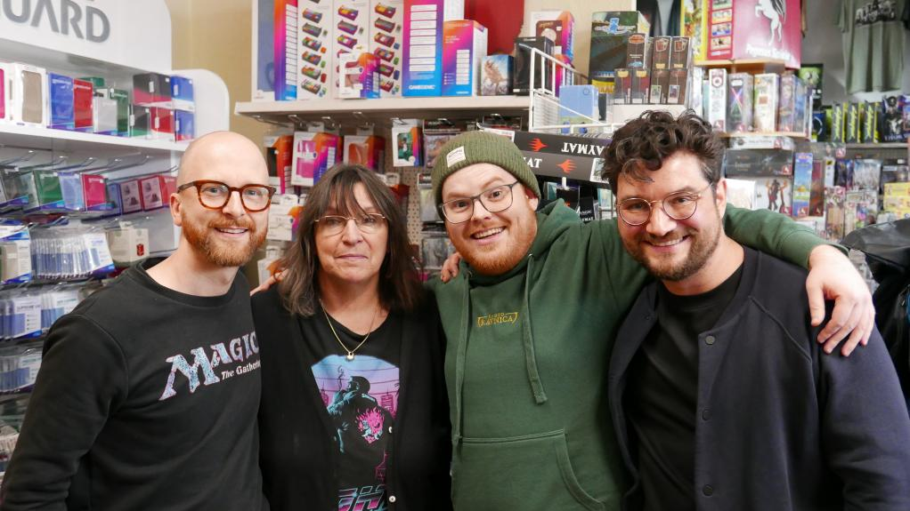
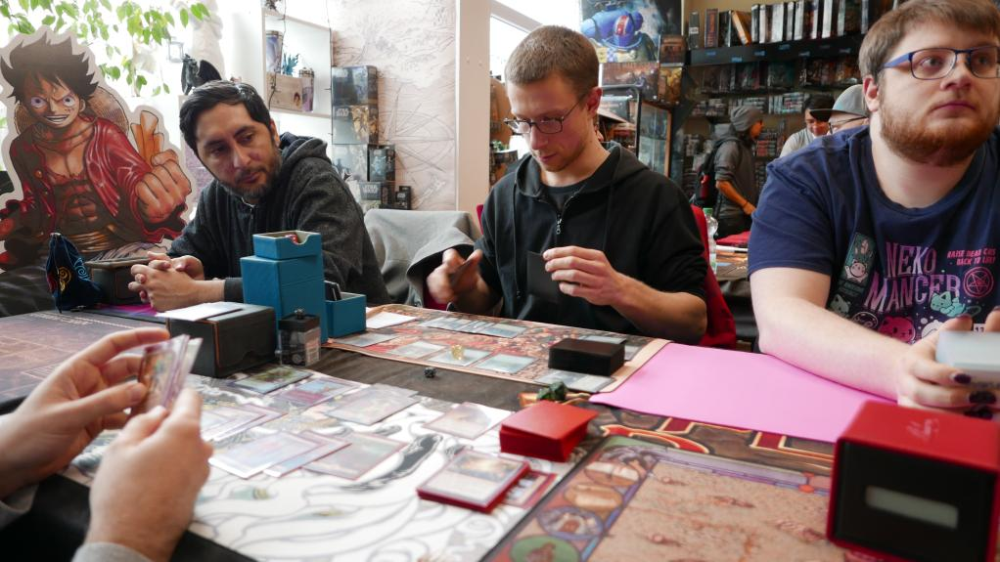

Mark your calendars for October 19th, 2024, and prepare for an epic day of Magic The Gathering at FunTainment! Whether you’re a seasoned Pauper player or new to the format, this is an event you won’t want to miss.
Pauper to the People
Munich’s biggest Pauper Tournament.
19th October 2024.
Join Our Mailing List for Updates!
Our Partner


🎉 Over the last three years, we've established a series of Magic tournaments across Germany for the common people, and this Munich edition marks the 5th in our exciting series. 🌟
🧙♂️ Whether you’re a seasoned Pauper player or new to the format, this is an event you won’t want to miss. Compete with fellow enthusiasts, showcase your skills, and be a part of Munich's premier Pauper tournament. 🏆
🎁 Exciting prizes, a vibrant community, and unforgettable battles await you! ⚔️
Pauper To The People is an initiative of the German Tasty MTG Podcast.
So give it a listen or join our Tasty Pauper Discord Server.
Previous Events







